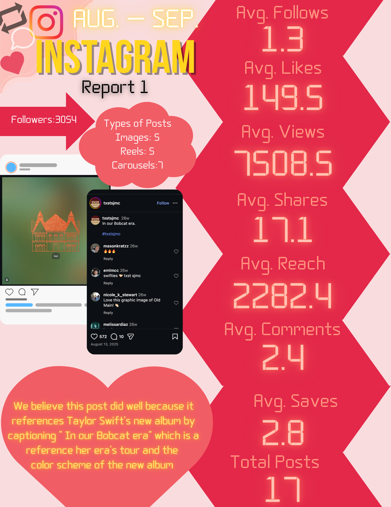
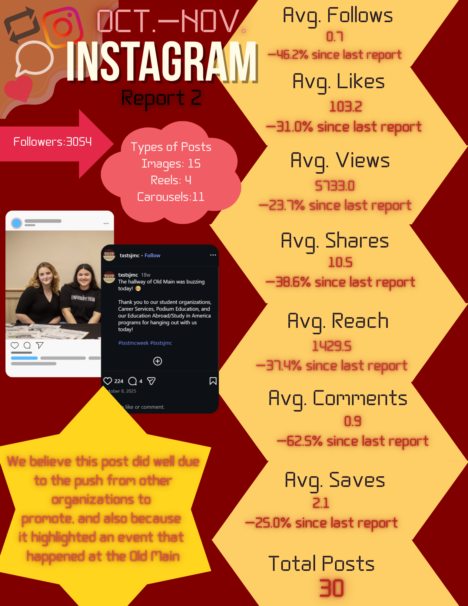
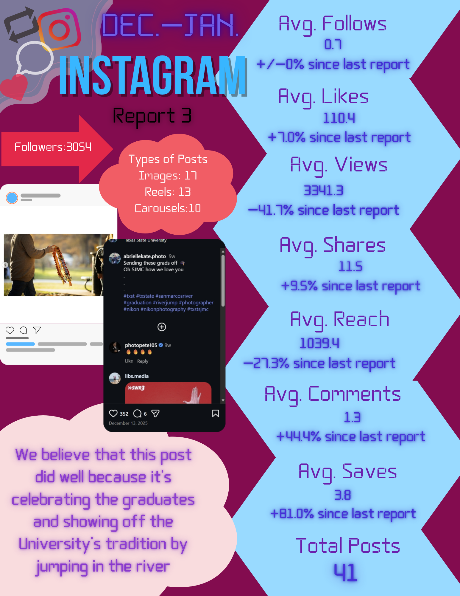

Analytics Report
This report analyzed social media performance, strategy, and recommendations for improvement. The project focused on evaluating content effectiveness and identifying ways to strengthen future posts.
Page 1

Page 2

Page 3

Created in collaboration with Tyrianna Caldwell, Avianna Castillo, and Valerie Garcia.